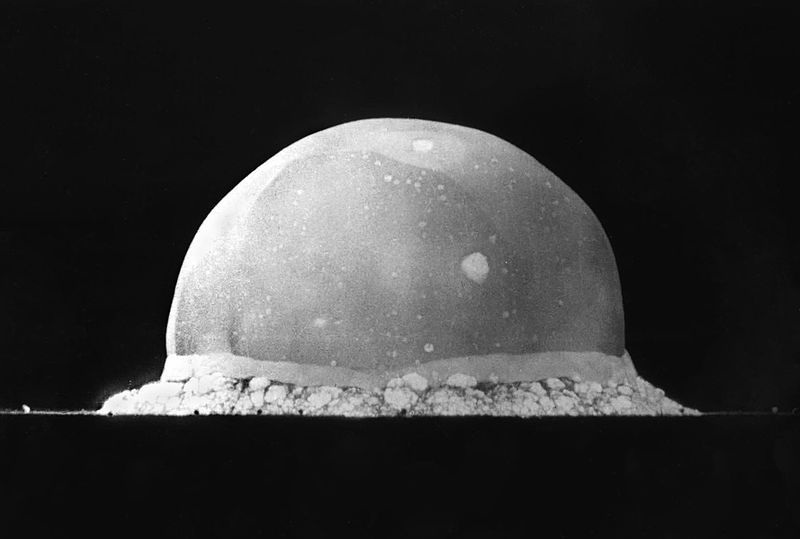
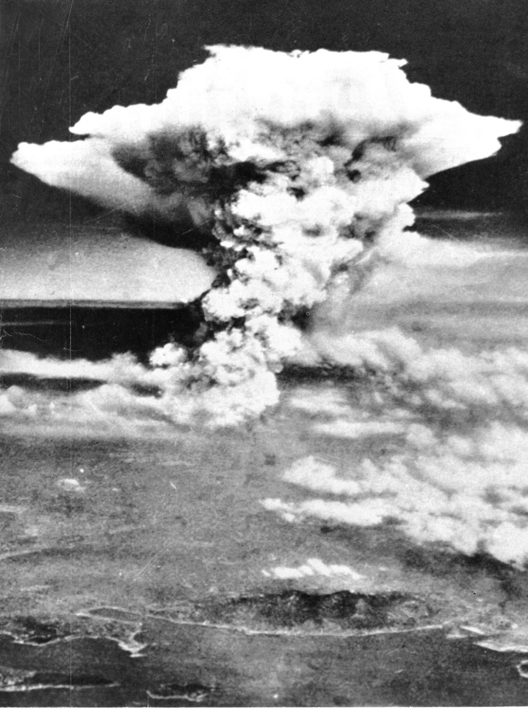
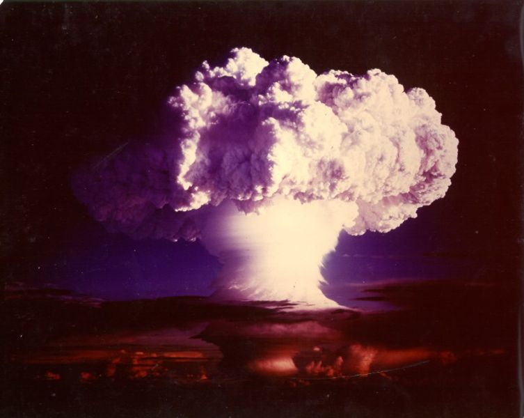
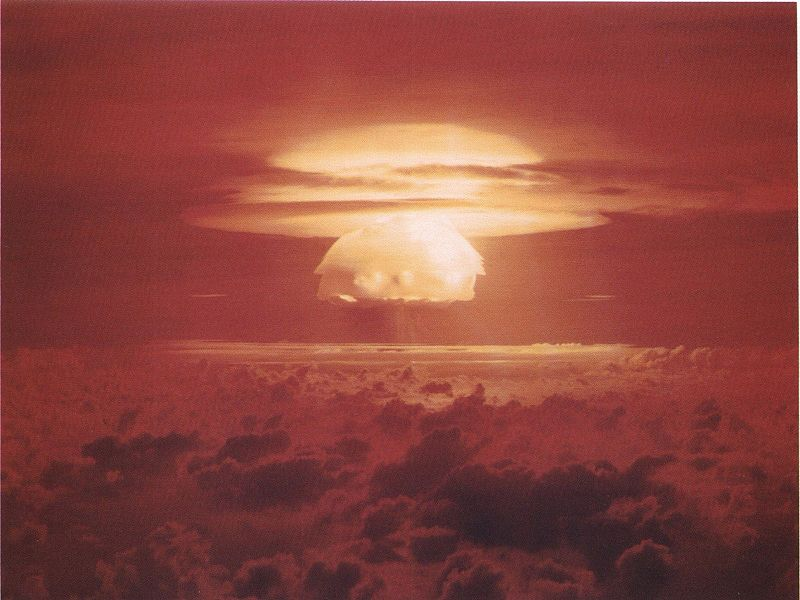
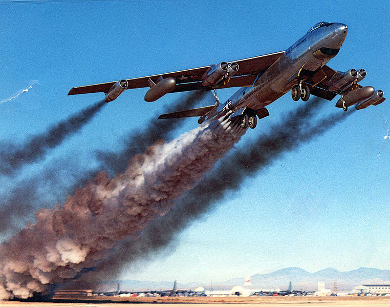

De la guerre thermonucléaire à Internet
Une petite histoire de la doctrine nucléaire américaine
Raphaël Rougeron / @goldoraf
Trinity
16 juillet 1945

Hiroshima
6 août 1945

Atomic Energy Act
1946
Création de l'Atomic Energy Commission
L'armement nucléaire est géré par des civils
Le Président est le seul habilité à décider de son utilisation
C'est une année de questionnement général : beaucoup de scientifiques du projet Manhattan et même des politiques pensent que l'arme atomique doit être déclarée hors-la-loi. Nombreux débats aux Nations Unies. Les USA et l'URSS commencent à se méfier l'un de l'autre, et la guerre froide commence. Des militaires US commencent à penser qu'il faut attaquer l'URSS avant qu'ils possèdent la bombe.
HALFMOON
1948
Premier plan de guerre nucléaire
Hypothèse : invasion de l'Europe par l'URSS
Contre-attaque US : "Atomic blitz", 133 bombes visant 70 villes soviétiques
Dont 7 sur Leningrad et 8 sur Moscou...
La Navy est la seule à critiquer le plan : pour eux, les bombardiers sont trop lourds et lents et se feront abattre par les soviets, et ils jugent qu'attaquer des civils n'est pas très éthique. En fait, ils sont jaloux car les bombes sont trop lourdes pour être embarquées sur des avions lancés par des porte-avions.
RDS-1
29 août 1949
1er test nucléaire soviétique
En réaction, les militaires US demandent les "clés de la bombe"
Cela leur sera refusé par Truman
Dans le même temps, le général LeMay est nommé à la tête du SAC. Il se rend compte que le SAC est très mal organisé, et que les bombardiers en cas de guerre seraient quasi incapables de mener leur mission (lors d'un exercice au-dessus des US, aucun bombardier n'a touché sa cible). Il commence à réformer le SAC, et à s'intéresser à la chaine de commande et de contrôle sur les armes nucléaires : système de procédures et de règles guidant ses hommes, réseau de radars et de détecteurs, lignes de communications, mécanismes permettant d'empêcher une détonation accidentelle mais d'en permettre une délibérée. Il faut dire qu'à l'époque, la fabrication des bombes est encore très artisanale (d'où des accidents comme celui de Slotin), et il faut 2 semaines à 36 personnes pour l'assemblage final d'une Mark 3, qui ne peut être stockée assemblée car trop rudimentaire (pb de batteries, pas de sécurité).
Invasion de la Corée du Sud par la Corée du Nord
25 juin 1950
Truman autorise le développement de la bombe à hydrogène
... et le transfert de 89 bombes dans les bases US en Grande-Bretagne
Stock : 300 bombes
L'AEC autorise le transfert, mais sans les coeurs, qui restent aux US. Les transferts de bombes sur le terrain se multiplient cependant.
Opération Ivy
1er novembre 1952

1er test réussi d'une bombe à hydrogène ("Mike"). Puissance : 10,4 Mt (500 fois Hiroshima). Ce test va faire évoluer les mentalités, la puissance des bombes H est telle que le seul moyen de gagner une guerre nucléaire est de frapper le premier, et fort. LeMay pense qu'attaquer les villes n'est pas prioritaire, mieux vaut incapaciter le plus vite possible les capacités nucléaires soviétiques. Mais vu le nombre de cibles (bases, pistes, etc...), il faut fabriquer bcp de bombes supplémentaires. La Navy milite pour des torpilles et mines nucléaires, l'Army pour des mines, rockets et munitions d'artillerie nucléaires (ils en demandent 151.000...)
Juin 1953
Eisenhower autorise le transfert des coeurs nucléaires des armes déjà déployées aux militaires
Castle Bravo
1er mars 1954

1er test d'une bombe à hydrogène "pratique" (coeur solide, suffisamment légère), mais la puissance dégagée est 3 fois supérieure aux prévisions (15 Mt). 2 milliards de tonnes de coraux de l'atoll de Bikini sont vaporisés. Les retombées radioactives sont très importantes, des habitants de l'île de Rongelap (îles Marshall) doivent être évacués. On prend conscience du pb posé par les retombées. Churchill est perturbé par les résultats de ce test, et un rapport sur les effets de bombes H sur la GB le convaincra de lancer le dev de la bombe H afin de conserver une position de force et donc une influence dans le monde.
1955-1957
Construction d'un réseau de radars en Alaska : le Distant Early Warning
Création du North American Air Defense Command (NORAD)
Les américains prennent conscience du fait qu'ils sont vulnérables à une attaque de bombardier russes et agissent en conséquence. Mais la transmission d'infos par Teletype prend plusieurs heures, et en cas d'attaque/contre-attaque, le SAC ne pourrait pas réellement contrôler et commander leurs bombardiers. On construit un bunker sous la Maison Blanche.
1957
Août : 1er lancement (soviétique) d'un ICBM, la R-7
4 octobre : lancement de Spoutnik-1
3 novembre : Spoutnik-2 (Laïka)
Krutschev annonce qu'à la fin de l'année 250 R-7 seront déployées : c'est du bluff, car ce n'est pas un missile pratique, mais cela va alimenter la peur et la course à l'armement. 3 nouveaux radars sont construits en Alaska pour détecter une attaque de missiles russes. Mise en place de l'opération Chrome Dome : 12 B-52s armés sont maintenus dans les airs en permanence, prêts à frapper l'URSS. Un système automatique permet de placer les coeurs dans les bombes à l'intérieur de l'avion. Les US ont à ce moment 6 programmes différents de dev. de missiles balistiques. En décembre, Eisenhower décide de confier des bombes (sans les coeurs) aux pays alliés de l'OTAN.
Chaque corps armé a alors son propre plan de guerre nucléaire, aux cibles redondantes et sans coordination.
Operation Chrome Dome

Single Integrated Operational Plan
2 décembre 1960
3729 cibles regroupées en 1000 "ground zeroes"
... attaquées avec 3423 bombes atomiques
80% de cibles militaires
Estimation des pertes : 220 millions (50% de la pop. soviet)
De nb cibles jugées importantes doivent être bombardées 4 ou 5 fois, pour être sûr de délivrer assez de Mt pour assurer leur destruction complète (1 Atlas, 1 Jupiter, 1 Titan, 3 bombes par B-52). Le pb de ce plan est, qu'une fois lancé, il ne peut être arrêté par manque de moyens de communication.
1961
20 janvier : Kennedy président
23 janvier : crash d'un B-52 à Goldsboro
16-19 avril : Baie des Cochons
13 août : Mur de Berlin
Le nouveau secrétaire à la défense, McNamara, découvre 3 jours après avoir pris ses fonctions qu'il y a de nb incidents impliquant des bombes nucléaires et que leurs systèmes de sécurité ne sont pas assez fiables. Pas de mesures empêchant un général fou de lancer une attaque ou de faire exploser une bombe => gros risques de guerre nucléaire "accidentelle" (non autorisée par le président). Un rapport du Pentagone montre que la chaine de commande est trop fragile pour monter une attaque graduelle ou "agile", et que les Soviets commenceraient certainement par une attaque de décapitation sur les sites pouvant protéger le président.
24 novembre 1961
Perte des liens de communication entre le BMEWS et le SAC
Création du World Wide Military Command and Control System
Paul Baran (RAND) propose un "réseau de communications numérique distribué avec des centaines ou milliers de noeuds connectés par de multiples chemins"
Baran cherche à harmoniser les demandes contradictoires de centralisation et de décentralisation, et, partant du principe qu'un réseau de communication hiérarchique est vulnérable par la destruction de quelques noeuds, propose un réseau de communications numérique distribué avec des centaines ou milliers de noeuds connectés par de multiples chemins. Les messages seront découpés en paquets, envoyés par le premier chemin dispo, et assemblés à leur destination finale. Ce travail a posé les bases de ce qui deviendra Arpanet puis Internet (même si Arpanet n'a pas été conçu pour résister à une guerre nucléaire, il s'agissait seulement de l'objectif de l'étude du RAND).